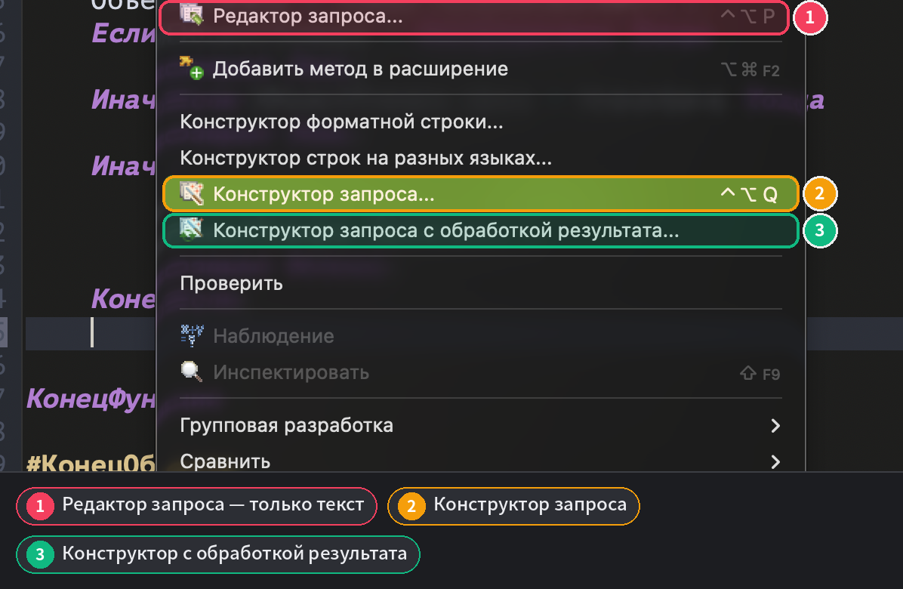
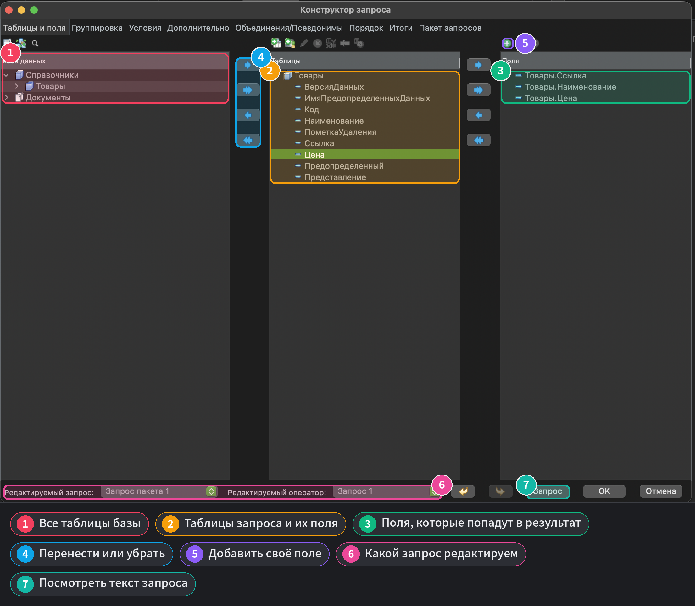
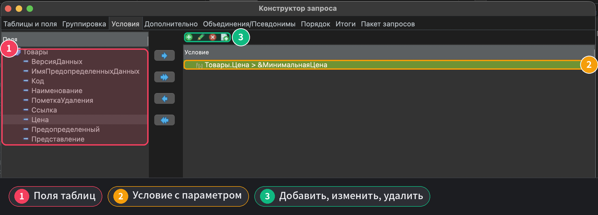
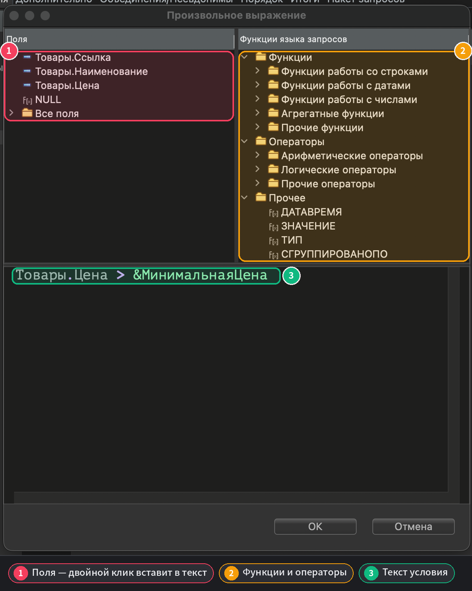
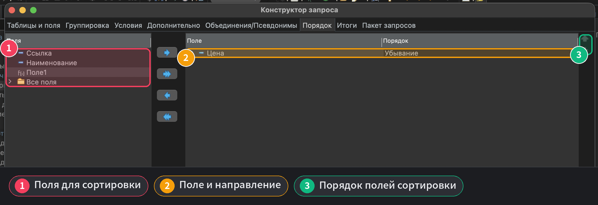
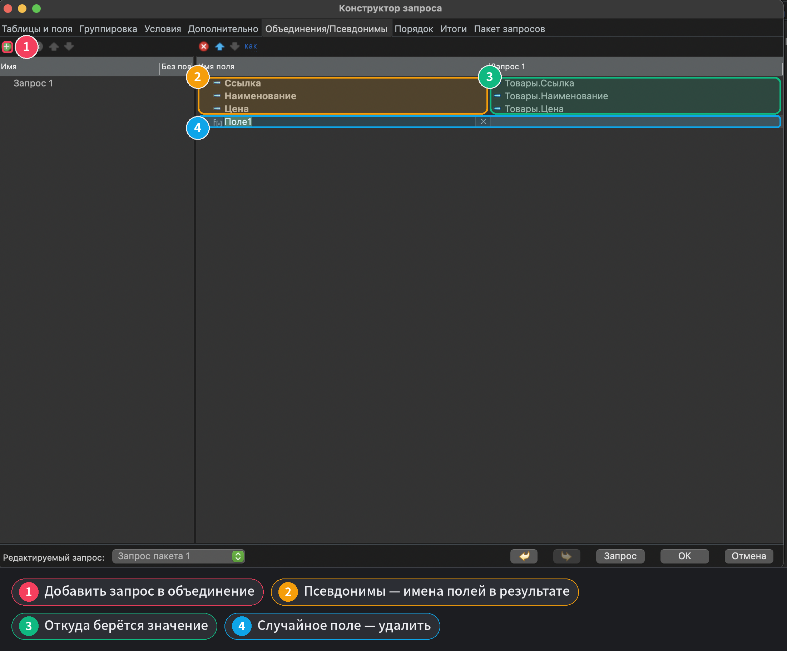
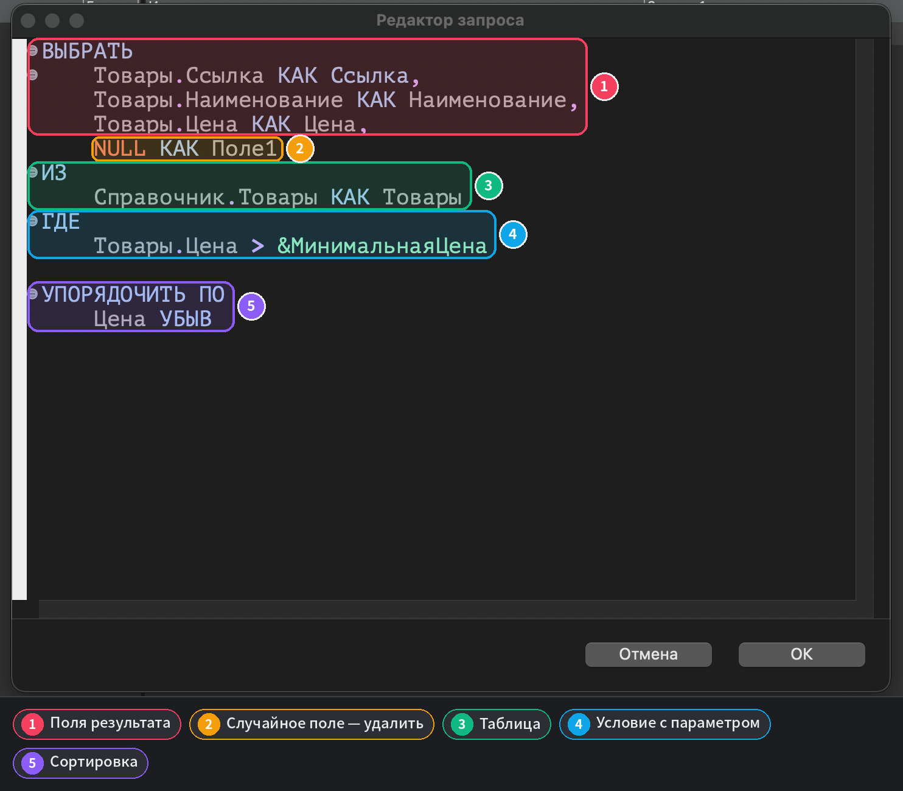
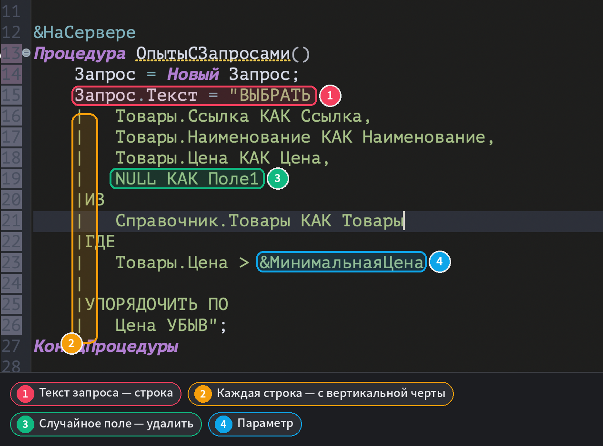
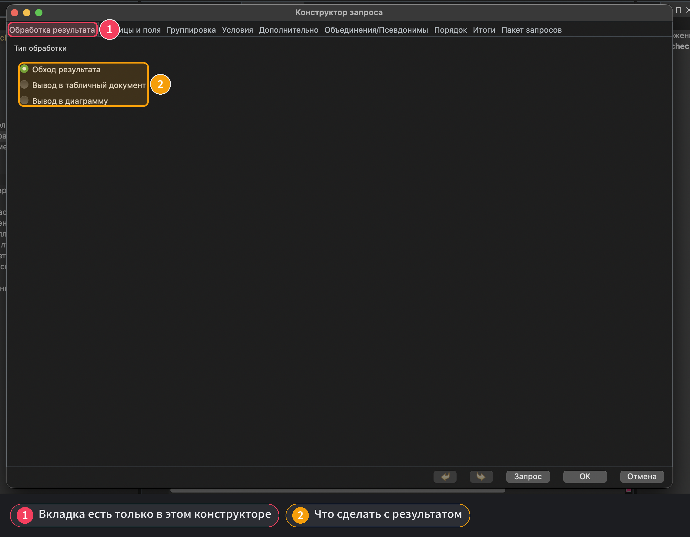
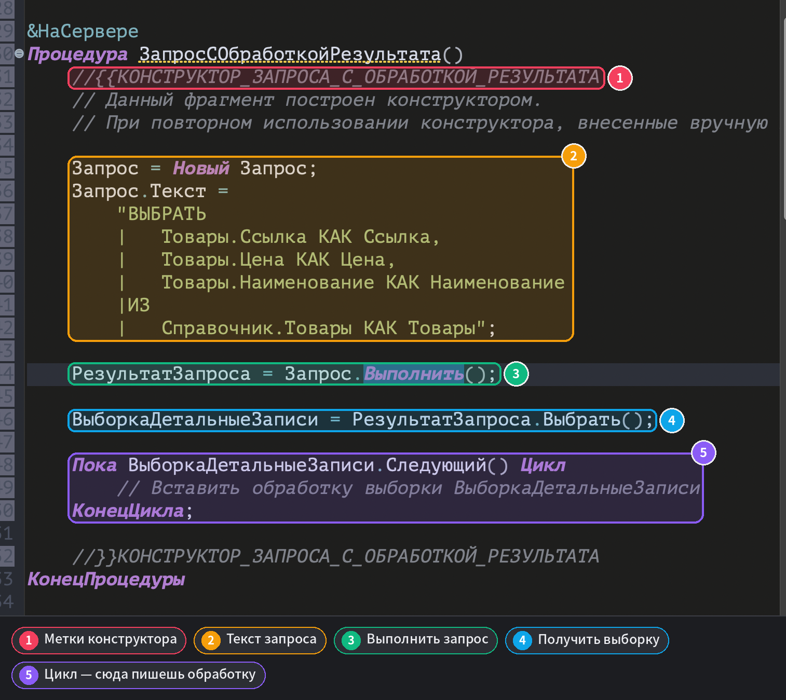

1. Что это, зачем, где найти
Что это. Запрос — способ получить данные из базы одной командой. Пишется на языке запросов 1С — он похож на SQL, только слова русские.
Зачем. В главе 2 ты получал товары через выборку справочника: достаёшь все карточки по одной и сам решаешь, что с ними делать. Запрос делает это на стороне базы: сам отбирает, сортирует, связывает таблицы и считает итоги. Тебе приходит готовый результат.
| Выборка справочника | Запрос |
|---|---|
| Вынести все карточки из картотеки и перебрать руками | Сказать кладовщику: «Принеси карточки товаров дороже 1000, по убыванию цены» |
| Отбор и сортировка — твоим кодом в цикле | Отбор и сортировка — в самом запросе |
| Только одна таблица | Можно связать несколько таблиц сразу |
Где.
- В коде — объект
Новый Запрос, текст запроса задаётся строкой. Только на сервере. - Конструктор запроса в EDT — визуальный редактор: выбираешь таблицы и поля мышкой, он пишет текст сам.
- Консоль запросов — для проверки запросов на живых данных. Задача 5 этой главы.
2. Как устроен запрос
Полный пример
&НаСервере
Процедура ТоварыДорожеЦены()
Запрос = Новый Запрос;
Запрос.Текст =
"ВЫБРАТЬ
| Товары.Ссылка КАК Ссылка,
| Товары.Наименование КАК Наименование,
| Товары.Цена КАК Цена
|ИЗ
| Справочник.Товары КАК Товары
|ГДЕ
| Товары.Цена > &МинимальнаяЦена
|УПОРЯДОЧИТЬ ПО
| Цена УБЫВ";
Запрос.УстановитьПараметр("МинимальнаяЦена", 1000);
Выборка = Запрос.Выполнить().Выбрать();
Пока Выборка.Следующий() Цикл
Вывести(СтрШаблон("%1 — %2", Выборка.Наименование, Выборка.Цена));
КонецЦикла;
КонецПроцедуры
Разбор построчно
| Строка | Что значит |
|---|---|
Запрос = Новый Запрос; |
Создаём объект запроса |
Запрос.Текст = "..." |
Текст запроса — обычная строка. Каждая новая строка начинается с вертикальной черты — так в 1С пишут многострочный текст |
ВЫБРАТЬ |
Какие поля получить |
Товары.Ссылка КАК Ссылка |
Поле Ссылка из таблицы Товары. КАК Ссылка — псевдоним: под этим именем поле будет в результате |
ИЗ Справочник.Товары КАК Товары |
Из какой таблицы. КАК Товары — короткое имя таблицы внутри запроса |
ГДЕ |
Условие отбора — какие строки взять |
Товары.Цена > &МинимальнаяЦена |
&МинимальнаяЦена — параметр. Значение подставится из кода |
УПОРЯДОЧИТЬ ПО Цена УБЫВ |
Сортировка по цене, от большего к меньшему |
УстановитьПараметр(...) |
Передаём значение параметра. Имя — без & |
Выполнить() |
Отправляем запрос в базу, получаем результат |
.Выбрать() |
Превращаем результат в выборку |
Пока Выборка.Следующий() Цикл |
Тот же цикл, что у выборки справочника в главе 2. Поля — по псевдонимам из ВЫБРАТЬ |
Основные слова
| Слово | Что делает | Пример |
|---|---|---|
ВЫБРАТЬ |
Какие поля получить | ВЫБРАТЬ Товары.Наименование |
ПЕРВЫЕ N |
Только первые N строк | ВЫБРАТЬ ПЕРВЫЕ 10 |
РАЗЛИЧНЫЕ |
Убрать повторяющиеся строки | ВЫБРАТЬ РАЗЛИЧНЫЕ |
ИЗ |
Из какой таблицы | ИЗ Справочник.Товары КАК Товары |
КАК |
Псевдоним поля или таблицы | Товары.Цена КАК Цена |
ГДЕ |
Условие отбора | ГДЕ Товары.Цена > 1000 |
И, ИЛИ, НЕ |
Связать условия | ГДЕ Цена > 100 И НЕ ПометкаУдаления |
В (...) |
Значение входит в список | ГДЕ Товары.Ссылка В (&СписокТоваров) |
МЕЖДУ ... И ... |
В диапазоне | ГДЕ Цена МЕЖДУ 100 И 1000 |
ПОДОБНО |
Поиск по шаблону строки | ГДЕ Наименование ПОДОБНО "%мыш%" |
УПОРЯДОЧИТЬ ПО |
Сортировка | УПОРЯДОЧИТЬ ПО Цена УБЫВ |
УБЫВ — по убыванию, ВОЗР — по возрастанию, его можно не писать.
Имена таблиц
| Что | В коде | В запросе |
|---|---|---|
| Справочник | Справочники.Товары |
Справочник.Товары |
| Документ | Документы.ПриходТовара |
Документ.ПриходТовара |
| Табличная часть документа | Приход.Товары |
Документ.ПриходТовара.Товары |
В запросе — единственное число: Справочник, а не Справочники.
3. Параметры
Что это. Место в тексте запроса, куда значение подставится при выполнении. В тексте пишется с &, значение передаётся через УстановитьПараметр.
Запрос.Текст = "... ГДЕ Товары.Цена > &МинимальнаяЦена";
Запрос.УстановитьПараметр("МинимальнаяЦена", 1000);
Правило: значения передаются только через параметры. Никогда не вклеивай их в текст:
// ❌ Так нельзя
Запрос.Текст = "... ГДЕ Товары.Наименование = """ + Наименование + """";
// ✅ Так правильно
Запрос.Текст = "... ГДЕ Товары.Наименование = &Наименование";
Запрос.УстановитьПараметр("Наименование", Наименование);
Почему:
- Ссылки и даты не вклеить. Ссылку на товар нельзя превратить в текст запроса — только параметр.
- Безопасность. Если наименование пришло от пользователя и в нём есть кавычки, вклеенный текст сломает запрос. А при злом умысле — изменит его смысл.
- Скорость. Запрос с параметрами база узнаёт и не разбирает заново при каждом выполнении.
В параметр можно передать и массив — для условия В (&Список).
4. Конструктор запроса
Как открыть
Напиши в серверной процедуре Запрос = Новый Запрос; и Запрос.Текст = "";. Курсор внутрь кавычек → правый клик.

| № | Пункт | Что делает |
|---|---|---|
| 1 | Редактор запроса | Окно с текстом запроса и подсветкой. Без вкладок — правишь руками |
| 2 | Конструктор запроса | Визуальный редактор. Вставляет только текст запроса |
| 3 | Конструктор с обработкой результата | То же, плюс готовый код вокруг запроса — раздел 5 |
Если в кавычках уже есть текст, конструктор откроет его для правки.
Вкладка «Таблицы и поля»
Главная вкладка: откуда берём данные и какие поля нужны.
Как собрать: из справочников возьми Товары и перенеси в среднюю колонку. Раскрой его и перенеси Ссылка, Наименование, Цена в правую колонку.

| № | Что это |
|---|---|
| 1 | База данных — все таблицы конфигурации: справочники, документы, позже регистры и временные таблицы |
| 2 | Таблицы — таблицы, из которых берёт данные запрос. Раскрываются до полей |
| 3 | Поля — что попадёт в результат. Из них получится блок ВЫБРАТЬ |
| 4 | Стрелки: одна — перенести выделенное, двойная — всё сразу, обратные — убрать. Переносить можно и двойным кликом |
| 5 | Зелёный «+» — добавить своё поле, например вычисляемое. Если нажать случайно, появится NULL КАК Поле1 — такое поле нужно удалить |
| 6 | Какой запрос редактируешь. Нужно, когда запросов несколько — задачи 3.2 и 3.4 |
| 7 | «Запрос» — посмотреть текст, который получается |
Когда в средней колонке две таблицы и больше, появится вкладка «Связи» — задача 3.2.
Вкладка «Условия»
Блок ГДЕ — какие строки взять.
Как добавить: перенеси Цена слева в правую часть. Появится условие вида Товары.Цена = &Цена. Чтобы поменять знак и имя параметра, открой условие на изменение — двойной клик или карандаш.

| № | Что это |
|---|---|
| 1 | Поля таблиц запроса |
| 2 | Условие. Всё, что начинается с &, — параметр |
| 3 | Добавить, изменить, удалить условие. Несколько условий соединятся через И |
При изменении открывается окно «Произвольное выражение» — там условие пишется текстом:

| № | Что это |
|---|---|
| 1 | Поля. Двойной клик — вставит поле в текст |
| 2 | Функции и операторы языка запросов. Пригодятся позже |
| 3 | Текст условия: Товары.Цена > &МинимальнаяЦена |
Вкладка «Порядок»
Блок УПОРЯДОЧИТЬ ПО.
Как добавить: перенеси Цена вправо, в колонке «Порядок» выбери «Убывание».

| № | Что это |
|---|---|
| 1 | Поля, по которым можно сортировать |
| 2 | Поле и направление: «Возрастание» или «Убывание» |
| 3 | Стрелки вверх-вниз — порядок, если сортируешь по нескольким полям |
Вкладка «Объединения/Псевдонимы»
Имена полей в результате — то, что стоит после КАК. По этим именам ты потом обращаешься к полям в выборке: Выборка.Цена.

| № | Что это |
|---|---|
| 1 | Список запросов. Зелёный «+» добавляет второй запрос для объединения — задача 3.2 |
| 2 | Псевдонимы — имена полей в результате. Двойной клик — переименовать |
| 3 | Откуда берётся значение каждого поля |
| 4 | Случайно добавленное поле Поле1 — его стоит удалить красным крестиком |
Кнопка «Запрос» — посмотреть текст
Внизу конструктора. Показывает, какой текст получился из всех вкладок.

| № | Блок | Какая вкладка его сделала |
|---|---|---|
| 1 | ВЫБРАТЬ ... |
«Таблицы и поля» + псевдонимы |
| 2 | NULL КАК Поле1 |
Случайно нажатый «+» на «Таблицах и полях» — удалить |
| 3 | ИЗ ... |
«Таблицы и поля» |
| 4 | ГДЕ ... |
«Условия» |
| 5 | УПОРЯДОЧИТЬ ПО ... |
«Порядок» |
Результат в коде
После «ОК» конструктор вставит текст в кавычки:

| № | Что это |
|---|---|
| 1 | Текст запроса — одна большая строка |
| 2 | Каждая строка внутри начинается с вертикальной черты |
| 3 | Случайное поле — удали эту строку руками |
| 4 | Параметр. Значение нужно передать через УстановитьПараметр — конструктор этого не делает |
Дальше код пишешь сам: УстановитьПараметр, Выполнить, обход результата.
Правило: конструктором пользоваться можно, но каждый текст после него читай и правь руками. Конструктор иногда добавляет лишнее. На работе ты будешь читать чужие запросы куда чаще, чем собирать свои.
5. Конструктор с обработкой результата
Чем отличается. Обычный конструктор вставляет только текст запроса. Этот — ещё и код вокруг: создание запроса, выполнение и обработку результата.
Открывается так же, но курсор ставится на пустую строку в процедуре, а не в кавычки. У него есть лишняя вкладка:

| № | Что это |
|---|---|
| 1 | Вкладка «Обработка результата» — есть только в этом конструкторе |
| 2 | Что сделать с результатом: обойти циклом, вывести в табличный документ или в диаграмму |
Для обычной работы выбирай «Обход результата». Получится такой код:

| № | Что это |
|---|---|
| 1 | Метки начала и конца. По ним конструктор находит свой фрагмент при повторном открытии. Если поправишь код между метками руками, при следующем запуске конструктора правки пропадут |
| 2 | Новый Запрос и текст запроса |
| 3 | Выполнить() — отправить запрос в базу |
| 4 | Выбрать() — получить выборку |
| 5 | Цикл — сюда пишешь, что делать с каждой строкой |
Когда какой
| Ситуация | Какой конструктор |
|---|---|
| Пишешь новую процедуру с нуля | С обработкой результата — сэкономит набор шаблона |
| Правишь существующий запрос | Обычный |
| Код вокруг запроса уже есть | Обычный |
| Нужно быстро поправить текст | Редактор запроса |
Метки и длинное имя ВыборкаДетальныеЗаписи можно убрать после генерации — это обычный код.
6. Ловушки
СправочникивместоСправочник. В запросе — единственное число. Ошибка всплывёт только при выполнении.- Вклеенные значения. Любое значение — через параметр, даже если оно «точно безопасное».
- Параметр не установлен или имя не совпадает.
&МинЦенав тексте и"МинимальнаяЦена"вУстановитьПараметр— ошибка при выполнении. Конструктор параметры не устанавливает — это всегда делаешь сам. - Случайное поле
NULL КАК Поле1. Появляется от зелёного «+» на «Таблицах и полях». Проверяй текст кнопкой «Запрос». - Кавычки внутри текста запроса. Весь текст — строка, поэтому кавычки внутри удваиваются:
""%мыш%"". Ещё одна причина не писать значения в текст. - Запрос только на сервере. В
&НаКлиентеобъектаЗапроснет.
7. Справочник
Остальные вкладки конструктора
| Вкладка | Что делает | Где разбираем |
|---|---|---|
| Связи | Соединение таблиц | Задача 3.2 |
| Группировка | СГРУППИРОВАТЬ ПО, суммы |
Задача 3.2 |
| Итоги | ИТОГИ ПО |
Задача 3.2 |
| Дополнительно | ПЕРВЫЕ, РАЗЛИЧНЫЕ, временные таблицы |
Задачи 3.2 и 3.4 |
| Пакет запросов | Несколько запросов подряд | Задача 3.4 |
Результат запроса
| Нужно | Как |
|---|---|
| Проверить, есть ли данные | Результат.Пустой() |
| Перебрать строки | Результат.Выбрать() + Пока ... Следующий() |
| Получить таблицу значений | Результат.Выгрузить() |
Подробнее — в задаче 3.5.
Слова запроса и аналоги в SQL
| 1С | SQL |
|---|---|
ВЫБРАТЬ |
SELECT |
ПЕРВЫЕ 10 |
TOP 10 / LIMIT 10 |
РАЗЛИЧНЫЕ |
DISTINCT |
ИЗ |
FROM |
ГДЕ |
WHERE |
УПОРЯДОЧИТЬ ПО |
ORDER BY |
КАК |
AS |
ПОДОБНО |
LIKE |
Шаблоны ПОДОБНО
| Символ | Значит |
|---|---|
% |
Любое количество любых символов |
_ |
Ровно один любой символ |
Выборка или запрос
| Задача | Что брать |
|---|---|
| Пройти по всем элементам и изменить каждый | Выборка справочника или запрос |
| Отбор по условию, сортировка | Запрос |
| Данные из нескольких таблиц | Запрос |
| Итоги, суммы, количество | Запрос |
Проверь себя
| Вопрос | Ответ |
|---|---|
| Как в запросе называется таблица справочника «Товары»? | Справочник.Товары |
Что значит & перед словом? |
Параметр — значение подставится из кода |
| Почему нельзя вклеивать значения в текст? | Ссылки и даты не вклеить, риск сломать запрос, база не узнаёт запрос повторно |
| Чем конструктор с обработкой результата отличается от обычного? | Вставляет не только текст, но и код выполнения и обхода |
| Устанавливает ли конструктор значения параметров? | Нет, УстановитьПараметр пишешь сам |
| Каким циклом обходят результат? | Пока Выборка.Следующий() Цикл |
Источники
- Синтакс-помощник EDT: «Запрос», «Язык запросов».
- Язык запросов 1С: обработка результатов с помощью конструктора